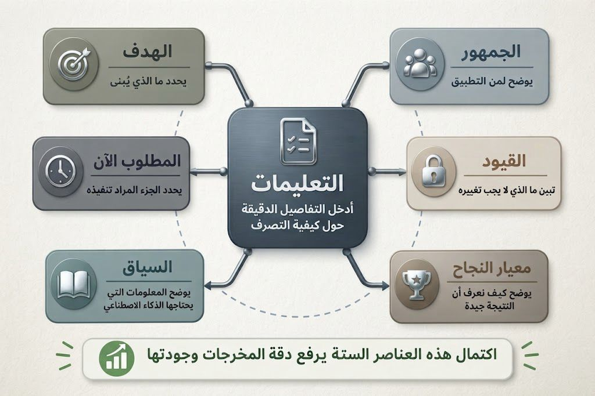

تعرّف هذه الدورة نمط Vibe Coding وكيفية الانتقال من الفكرة إلى التطبيق بمساعدة الذكاء الاصطناعي عبر بناء تدريجي واختبار مستمر وتحسين متكرر، كما تساعدك على كتابة تعليمات فعالة ومراجعة المخرجات بوعي تقني يضمن جودة النتيجة.
أهداف الدورة
شرح مفهوم Vibe Coding وتمييزه عن أسلوب كتابة التعليمات البرمجية التقليدي.
تطبيق المبادئ الخمسة لـ Vibe Coding على فكرة تطبيق بسيطة.
صياغة تعليمات واضحة ومحددة توجّه الذكاء الاصطناعي نحو نتيجة مناسبة.
التعرّف على أدوات الذكاء الاصطناعي المساندة في Vibe Coding واختيار الأنسب منها لكل مرحلة.
تقييم مخرجات الذكاء الاصطناعي واكتشاف ما يحتاج إلى تعديل أو اختبار.
تحديد المعارف البرمجية الأساسية التي تعزز استخدام Vibe Coding بفعالية.
تحويل فكرة أولية إلى تطبيق قابل للتشغيل باستخدام أدوات الذكاء الاصطناعي.
وهي نمط برمجي حديث يعتمد على الانتقال بالأنظمة والتطبيقات من مرحلة الفكرة إلى التطبيق العملي خطوة بخطوة بمساعدة الذكاء الاصطناعي، وذلك من خلال البناء التدريجي، والاختبار المستمر، والتحسين المتكرر؛ فالمسألة لا تقتصر على مجرد كتابة الكود البرمجي فحسب.
سنفهم معاً مفهوم Vibe Coding ونميزه عن الطرق البرمجية التقليدية. بعد ذلك، ستتدرب على صياغة توجيهات (Prompts) واضحة ودقيقة للذكاء الاصطناعي لضمان الحصول على مخرجات مناسبة، مع تعلم كيفية مراجعة هذه المخرجات بوعي تقني لتحديد ما يحتاج إلى تعديل أو اختبار. وفي النهاية، ستكتسب أهم المعارف البرمجية التي تمكنك من استخدام هذا الأسلوب بفعالية واستخراج نتائج قوية وموثوقة.
ماذا ستتعلم في هذه الدورة
فهم Vibe Coding
ستستوعب فكرة Vibe Coding، وكيف تُوجّه الذكاء الاصطناعي للتركيز على تحقيق الهدف مباشرة، بدلاً من البدء بكتابة سطور برمجية عشوائية.
تطبيق المبادئ الخمسة
ستوظّف المبادئ الخمسة ضمن مسار بناء تدريجي، وتتعلم كيفية الحدّ من التشتت وضبط الجودة منذ البداية.
تعليمات فعالة
ستتعلم كيفية صياغة تعليمات واضحة وشاملة تتضمن تحديد الهدف، والجمهور المستهدف، والقيود التقنية، ومعايير النجاح؛ لضمان حصولك على مخرجات أكثر دقة وجودة من الذكاء الاصطناعي.
المعرفة المطلوبة والمراجعة
ستراجع مخرجات الذكاء الاصطناعي بوعي تقني لتحديد ما يحتاج إلى تعديل واختبار، وتستند إلى أهم المعارف البرمجية التي تضمن لك التحكم الكامل بجودة المخرجات.
الوحدة 2 · مدخل إلى Vibe Coding
ما هو Vibe Coding؟
يُعدّ Vibe Coding أسلوباً حديثاً في تطوير البرمجيات ينطلق من تحديد الهدف والنتيجة المرجوّة قبل البدء بكتابة السطور البرمجية.
وتكمن أهمية هذا الأسلوب في التحول من السؤال التقليدي: "كيف أكتب هذا الكود؟" إلى التفكير المباشر في احتياج التطبيق نفسه: "ماذا أريد من التطبيق أن يقدّم؟ ولمن؟ وما النتيجة النهائية التي أسعى للوصول إليها؟".
يغيّر هذا المفهوم طريقة التفكير البرمجي؛ لتنتقل من كتابة الشفرات/التعليمات يدوياً سطرًا بسطر، إلى توجيه الذكاء الاصطناعي بدقة، ثم مراجعة النتائج وتحسينها تدريجياً.
يغيّر Vibe Coding نقطة الانطلاق في تطوير التطبيقات؛ فبدل أن يبدأ السؤال من «كيف أكتب الكود؟»، يصبح من «ما الذي أريد من التطبيق أن يحققه؟».
كلما كان وصفك للهدف والوظائف المطلوبة أكثر وضوحًا ودقة، أصبح بإمكانك توجيه أدوات الذكاء الاصطناعي بصورة أكثر فاعلية، كما تصبح مراجعة النتائج وتحسينها عملية أكثر سهولة وتنظيمًا.
وهنا تكمن القيمة الحقيقية لـ Vibe Coding: فهو لا ينظر إلى البرمجة بوصفها مهمة تنتهي بكتابة الكود، بل باعتبارها عملية متكاملة من التصور، والبناء، والاختبار، والمراجعة، والتحسين المستمر.
تحقّق من فهمك
الوحدة 2 · مدخل إلى Vibe Coding
حلقة العمل التفاعلية
من الوصف إلى التطبيق
نركز في هذا الجزء على أسلوب التطوير التكراري في Vibe Coding: كيف تنتقل من وصف الفكرة إلى بناء النسخة الأولى، ثم اختبارها ومراجعتها وتطويرها. الفكرة الأساسية هنا هي أن بناء التطبيقات لا يتم دفعة واحدة؛ بل عبر عملية تكرارية متتابعة تُكسبك خبرة مع كل دورة تطوير.
لماذا يُعدّ هذا الأمر مهماً؟
عند استخدامك للذكاء الاصطناعي، لا ينتهي دورك عند إعطاء أمر "اكتب/صمم لي التطبيق"، بل إنك تتولى قيادة المسار بأكمله؛ فتحدد الهدف، وتقيم الناتج، وتقدم الملاحظات، ثم تعيد التوجيه مجدداً حتى تصل بالنتيجة إلى الشكل المطلوب تماماً.
مثال مبسّط
تخيل أنك تريد بناء تطبيق بسيط لتتبع المهام:
بدلاً من الخوض في التفاصيل البرمجية منذ اللحظة الأولى، ابدأ بتحديد الهدف أولاً، ثم ابْنِ نسخة أولية. بعد ذلك، اختبر العمليات الأساسية؛ مثل: إضافة مهمة، حذفها، أو طريقة عرضها، للتحقق مما إذا كانت تعمل بالشكل المتوقع.
وإذا لاحظت وجود سلوك غير مضبوط، قدّم ملاحظاتك وأعِد التوجيه والتحسين حتى تصل إلى النتيجة المطلوبة.
دور الإنسان
أنت من يحدد الهدف ويقرر ما إذا كانت النتيجة مناسبة أم تحتاج إلى تعديل؛ فوجودك محوري لقيادة المسار وضمان عدم انحراف العمل عن الغرض المطلوب.
دور الذكاء الاصطناعي
الذكاء الاصطناعي شريك تنفيذي يساعدك في تحويل الوصف إلى تطبيق عملي، ويستجيب للملاحظات لإعادة البناء والتطوير؛ فهو أداة مساعدة قوية، لكنه لا يُعد بديلاً عن التوجيه والإشراف البشري.
طبيعة العملية
تتكون حلقة العمل من دورة متكاملة: وصف، بناء، تجربة، مراجعة، تقديم ملاحظات، تحسين، ثم تكرار. وهذا يعني أن جودة المنتج لا تظهر من المحاولة الأولى فحسب، بل تنضج وتتطور مع كل دورة جديدة.
تحقّق من فهمك
الوحدة 2 · مدخل إلى Vibe Coding
اختبار الوحدة الثانية
الوحدة 3 · المبادئ الخمسة
الخطوات الأولى في Vibe Coding
تحديد الهدف
المرحلة الأولى والأساسية التي تتطلب صياغة النتيجة المرجوّة بوضوح، وتحديد الجمهور المستهدف بدقة لضبط اتجاه المشروع بالكامل قبل البدء في أي خطوات تنفيذية.
البناء التدريجي
يقتضي هذا المبدأ تقسيم العمل إلى مراحل جزئية صغيرة بدلاً من محاولة إنجاز المنتج النهائي دفعة واحدة؛ إذ تمنحك كل نسخة مصغرة فرصة حقيقية للتحقق من صحة المسار وتقويمه أولاً بأول.
تغذية الذكاء الاصطناعي بالسياق (Prompt)
يُتيح تقديم السياق الكافي للذكاء الاصطناعي استيعاب المطلوب بدرجة أعلى من الدقة؛ فكلما غدا السياق أكثر وضوحاً وتفصيلاً، جاءت المخرجات أقرب لتلبية تطلعاتك وتحقيق الغرض المنشود.
الاختبار والمراجعة
تقوم هذه المرحلة على فحص المخرجات بعد كل نسخة لمعرفة ما يعمل بنجاح وما يتطلب التعديل والتطوير؛ فالمراجعة هنا جزء أصيل من عملية التعلم وتطوير المنتج، وليست مجرد خطوة إضافية.
التحسين والتكرار
تتجسد هذه المرحلة في توظيف التغذية الراجعة والملاحظات لإعادة البناء وتطوير النسخة التالية بشكل أكفأ؛ إذ يعتمد المبدأ كاملاً على حركة دائرية مستمرة: بناء، ثم تحسين، ثم بناء من جديد.
مثال توضيحي: تطوير تطبيق تعليمي
يُجسّد هذا المثال كيفية تطبيق حلقة Vibe Coding عملياً لبناء تطبيق يُعين الطلاب على مراجعة المصطلحات:
1. تحديد الهدف: بدلاً من بناء التطبيق كاملاً في محاولة واحدة، تبدأ بأسئلة جوهرية تضبط المسار: من الفئة المستهدفة؟ ما المشكلة المراد حلّها؟ وما الميزة الأساسية الأولى؟
2. البناء التدريجي: تشييد نسخة أولية مصغرة جداً، تتألف من واجهة واحدة تشتمل فقط على حقل إدخال للمصطلح وزر حفظ.
4. الاختبار والمراجعة: فحص المخرج وتقويم التجربة: هل الواجهة واضحة للمستخدم؟ هل هناك أي قصور في الأداء؟
5. التحسين والتكرار: توظيف الملاحظات والتغذية الراجعة لتطوير النسخة التالية وإضافة مزايا جديدة، لتستمر حلقة التطوير والارتقاء بالمخرج.
آلية عمل الحلقة التفاعلية كاملة
تعتمد هذه الدورة على تحويل الفكرة من مجرد هدف إلى نسخة أولية خاضعة للمراجعة والاختبار، ثم إعادة تحسينها بناءً على الملاحظات. والغاية هنا ليست مجرد الإسراع في التنفيذ، بل الاعتماد على خطوات متدرجة ومتكررة بدلاً من محاولة إخراج المنتج النهائي المكتمل من المحاولة الأولى.
المسار الإجرائي للحلقة:
الهدف←البناء←السياق←الاختبار←الملاحظات←التحسين←إعادة البناء
أهمية هذا التسلسل:
التعلم المستمر: استخلاص الدروس والتغذية الراجعة من كل نسخة يتم إنتاجها.
الحد من التشتت: التركيز على تطوير جزئيات محددة في كل مرحلة.
تجويد المخرجات: رفع كفاءة المنتج النهائي وصقله تدريجياً مع كل دورة عمل.
تحقّق من فهمك
الوحدة 3 · المبادئ الخمسة
أدوات ذكاء اصطناعي مساندة لـ Vibe Coding
هذه الصفحة تشرح الأدوات المساندة في Vibe Coding، وكيف يمكن استخدامها عبر مراحل التخطيط، بناء الواجهات، والاختبار والتحسين.
يساعد هذا القسم على فهم كيف تدعم أدوات الذكاء الاصطناعي مراحل Vibe Coding المختلفة، من التخطيط الأولي إلى بناء الواجهات والنماذج الأولية.
1. أدوات المحادثة والتخطيط
قبل البدء في كتابة أي كود، يحتاج المطور إلى تحويل الفكرة العامة إلى متطلبات واضحة.
يمكن استخدام أدوات مثل Claude وChatGPT للمساعدة في:
تحويل فكرة التطبيق إلى متطلبات واضحة.
تحديد الوظائف الأساسية.
اقتراح هيكل التطبيق.
تقسيم المشروع إلى مهام صغيرة.
مناقشة الخيارات التقنية المناسبة.
اكتشاف الحالات التي قد يغفل عنها المبتدئ.
2. أدوات بناء التطبيقات بالذكاء الاصطناعي
تتيح هذه الأدوات للمستخدم وصف فكرة التطبيق وما يريد منه أن يفعله، ثم تساعده في تحويل الفكرة إلى نموذج أو تطبيق قابل للتجربة والتطوير.
ومن أمثلتها:
Claude Code
Cursor
GitHub Copilot
Replit
Lovable
Bolt
3. البدء بنموذج أولي وتطويره تدريجيًا
عندما تكون الفكرة في بدايتها، لا تحتاج إلى بناء تطبيق متكامل من المحاولة الأولى. يمكن البدء بنموذج أولي بسيط لاختبار الفكرة والواجهة، ثم تطويره وإضافة الوظائف تدريجيًا.
يمكن استخدام أدوات مثل:
Replit
Lovable
Bolt
v0
الوحدة 3 · المبادئ الخمسة
كيف تختار الأداة المناسبة؟
كيف يختار المبتدئ الأداة المناسبة؟
بدل حفظ أسماء الأدوات، انطلق من حاجتك الحالية:
لدي فكرة وأحتاج إلى ترتيبها←أداة محادثة وتخطيط
أريد إنشاء نموذج أولي بسرعة←أداة بناء التطبيقات
أريد كتابة وتعديل الكود←AI Coding Assistant / Agent
لدي خطأ في الكود←أداة تحليل وتصحيح
أريد مراجعة الكود←AI Code Review
أريد ربط الذكاء الاصطناعي بأدوات خارجية←MCP
لدي مهام متكررة←Skills / Automation
لدي مشروع كبير ومهام متعددة←Agents / Subagents
خطأ شائع
من الأخطاء الشائعة في Vibe Coding أن يبدأ المستخدم بالسؤال: «ما أفضل أداة للبرمجة بالذكاء الاصطناعي؟»
والأدق أن يبدأ بالسؤال: «ما المشكلة التي أحاول حلها؟ وما المرحلة التي أعمل عليها الآن؟»
قد تكون أداة المحادثة هي الخيار الأنسب في مرحلة التخطيط، بينما تكون أداة Coding Agent أكثر ملاءمة عند التعامل مع مشروع قائم، وقد تكون أداة بناء النماذج الأولية أسرع عندما يكون الهدف اختبار فكرة واجهة.
الخلاصة
لا تكمن مهارة Vibe Coding في معرفة أكبر عدد ممكن من أدوات الذكاء الاصطناعي، وإنما في اختيار الأداة المناسبة للمهمة المناسبة، وتوجيهها بوضوح، ثم التحقق من النتائج التي تنتجها.
ومع ازدياد تعقيد المشروع، ينتقل دور الذكاء الاصطناعي تدريجيًا من مجرد مساعد في كتابة الكود إلى شريك في الاستكشاف والتخطيط والتنفيذ والاختبار والتحسين.
الوحدة 4 · كتابة تعليمات فعالة
أُسس التعليمات الفعّالة
كيف تجعل التعليمات أكثر وضوحاً ودقة؟
لا تُقاس جودة التعليمات (Prompt) بطولها، بل بدرجة دقتها ووضوحها؛ إذ تهدف إلى تقديم صورة منظمة ومتكاملة للذكاء الاصطناعي توضّح طبيعة المطلوب وتقلّص الاحتمالات المفتوحة.
إن غياب أي عنصر من هذه المبادئ يزيد من مستوى الغموض، فيتحول أداء النموذج من التنفيذ الدقيق إلى التخمين العشوائي.
3. المطلوب الآن: يضبط الخطوة التنفيذية الحالية المراد إنجازها في هذه المرحلة.
4. القيود: يحدد المحددات التقنية والثوابت التي لا يُسمح بتجاوزها أو تغييرها.
5. السياق: يزود النموذج بالخلفية والمعلومات اللازمة لاستيعاب الطلب بدقة.
6. معيار النجاح: يحدد الضوابط التي يُحكم من خلالها على كفاءة النتيجة وقبول المخرج.

*تم توليد هذه الصورة باستخدام الذكاء الاصطناعيأسلوب صياغة التعليمات بفعالية
ابدأ بجملة مختصرة توضح الهدف، ثم حدد الجمهور والمطلوب في الوقت الحالي. أضف قيدًا أو اثنين مع سياق مختصر، وأنهِ الطلب بمؤشر نجاح واضح.
كيف تتعامل مع الطلبات العامة؟
قسّم المشروع: لا تطلب تنفيذ التطبيق كاملًا دفعة واحدة، بل جزّئه إلى خطوات صغيرة ومستقلة.
استخدم الهيكل السداسي: استرجع العناصر الستة (الهدف، الجمهور، المطلوب الآن، القيود، السياق، معيار النجاح) واملأ الفراغات لتحديد نطاق الطلب.
استعن بالذكاء الاصطناعي للتخطيط: اطلب من النموذج تقسيم المهمة بعبارة مثل: «المشروع كبير، اقترح عليّ خطة مقسّمة لنبدأ بالخطوة الأولى فقط».
ركّز على النسخة الأولية: حدّد الميزة الأساسية الضرورية الآن، وأجّل المزايا المتقدمة للمراحل التالية.
متى يجب مراجعة الطلب؟
ارجع إلى المكونات الستة إذا شعرت أن المخرجات لم تحقق الفكرة أو أصبحت عامة بشكل مفرط. عادةً، تكمن المشكلة في عنصر مفقود أو غير محدد.
الوحدة 4 · كتابة تعليمات فعالة
اختبار الوحدة الرابعة
الوحدة 5 · المعرفة المطلوبة والمراجعة
لماذا ما زالت البرمجة مهمة؟
الفكرة الأساسية: التفكير البرمجي في عصر Vibe Coding
لا يلغي أسلوب Vibe Coding الحاجة للأساسيات البرمجية، بل يرفع من قيمتها؛ فالهدف ليس الاستغناء عن المعرفة التقنية، بل توظيفها بشكل أذكى لتكتب كوداً أقل وتفهم وتوجّه بدرجة أكبر.
تظل الأساسيات ضرورية لتتحول من مجرد متلقٍّ إلى موجه يقيّم مخرجات الذكاء الاصطناعي بنظرة ناقدة بدلاً من الاعتماد الأعمى.
لماذا تظل الأساسيات البرمجية ضرورية؟
تقييم جودة المخرجات: القدرة على تمييز الكود النظيف والآمن من الكود غير الكفء أو المليء بالثغرات.
توجيه الذكاء الاصطناعي بدقة: صياغة تعليمات برمجية (Prompts) متماسكة تستخدم المصطلحات التقنية والمنطق الصحيح.
تصحيح الأخطاء (Debugging): فهم مكامن الخلل عندما تتوقف الشفرة عن العمل، واكتشاف الأخطاء التي قد تفوت على النموذج.
تجميع الأجزاء: معرفة كيفية ربط الواجهات والمكتبات وقواعد البيانات ببعضها لتكوين نظام متكامل يعمل بسلاسة.
ما الذي يفرُق معك عملياً؟
كلما ارتقى فهمك للأساسيات البرمجية، تحوّلت عملية البرمجة من مجرد رصفٍ للأكواد إلى منظومة متكاملة من: الفهم + التقييم + اتخاذ القرار.
مكاسب الفهم العميق للأساسيات مع الذكاء الاصطناعي:
توجيه دقيق: القدرة على قيادة النموذج نحو حلول تقنية سديدة وقريبة من الهدف من المرة الأولى.
مراجعة منطقية: فحص النتيجة والتحقق من سلامة البناء البرمجي وتدفق البيانات المنطقي.
اكتشاف خاطف للأخطاء: صيد الثغرات البرمجية والخلل الذي قد يمرّ سريعاً وتغفل عنه العين.
تقييم الملاءمة: إطلاق حكم صائب حول المخرج: هل الكود صحيح؟ هل هو مناسب تقنياً؟ وهل يلبي احتياج المشروع بالفعل؟
الأساسيات
فهم البرمجة يُعزّز قدرتك على التعامل مع مخرجات الذكاء الاصطناعي ولا يُضعفها؛ فكلما عمُق الاستيعاب، ارتفعت جودة التوجيه وتضاعفت دقة المراجعة.
فحص النتيجة
ليس كل كود يُنتجه الذكاء الاصطناعي مناسباً بشكل تلقائي؛ لذا ينبغي دوماً طرح سؤالين محوريين: هل الحل صحيح تقنياً؟ وهل يخدم الهدف الفعلي للمشروع؟
دور الإنسان
يتولى الذكاء الاصطناعي مهام الصياغة والتوليد، بينما يختص الإنسان بمراجعة المخرجات وتقدير ملاءمتها، واتخاذ قرار الاعتماد أو التعديل أو الرفض.
خذها كقاعدة
إذا كنت تستخدم Vibe Coding، فلا تتعامل مع المخرجات كأنها نهائية لمجرد أنها خرجت من الذكاء الاصطناعي. الفهم البرمجي هو اللي يخليك تميّز بين حل يبدو جيدًا وحل فعلاً مناسب.
القاعدة الذهبية: كلما زاد فهمك للأساسيات، صار اعتمادك على الذكاء الاصطناعي أذكى، مو أكبر.
الوحدة 5 · المعرفة المطلوبة والمراجعة
ما الذي يجب مراجعته؟
لماذا تُعد هذه المعرفة مهمة؟
في أسلوب Vibe Coding، يمكن للذكاء الاصطناعي توليد جزء كبير من الشيفرة البرمجية، إلا أن ذلك لا يعني تراجع أهمية معرفة المبرمج ومهاراته. على العكس، كلما امتلك المتعلم فهمًا أفضل لأساسيات البرمجة، أصبح أكثر قدرة على توجيه نماذج الذكاء الاصطناعي، وتقييم مخرجاتها، والتحقق من صحتها، واكتشاف الأخطاء والمشكلات المحتملة قبل أن تؤثر في التطبيق.
لا يُشترط في Vibe Coding أن يحفظ المتعلم كل سطر برمجي أو يكتبه يدويًا، وإنما الأهم أن يمتلك المعرفة التي تمكّنه من فهم الحلول البرمجية وتقييم مدى ملاءمتها للهدف المطلوب.
ومن الأسئلة الأساسية التي ينبغي أن يكون المتعلم قادرًا على الإجابة عنها:
هل الحل المقترح مناسب للمهمة المطلوبة؟
هل الشيفرة البرمجية صحيحة من الناحية التقنية؟
هل يحقق الحل الهدف الوظيفي المطلوب؟
هل توجد أخطاء أو مشكلات قد تؤثر في أداء التطبيق؟
هل يمكن تطوير الحل أو تعديله مستقبلًا بسهولة؟
لذلك، فإن القيمة الحقيقية في Vibe Coding لا تكمن في القدرة على توليد الشيفرة البرمجية فحسب، وإنما في القدرة على فهمها وتقييمها وتوجيه عملية تطويرها. وهذا ما يميز بين الاستخدام السطحي للذكاء الاصطناعي وبين توظيفه كأداة فعّالة في بناء تطبيقات موثوقة.
أساسيات البرمجة
تفهمك للمتغيرات، الشروط، الحلقات، والدوال يساعدك تكتشف إذا الكود منطقي أو فيه خلل في الفكرة نفسها.
هياكل البيانات
تعرفك على القوائم، القواميس، والمصفوفات يخلّيك تختار تمثيل البيانات المناسب وتلاحظ إذا الحل متعب أو غير كفء.
قواعد البيانات
هذا المجال يفيدك لما تراجع تخزين البيانات، الاسترجاع، والعلاقات بين الجداول، خصوصًا إذا التطبيق يعتمد على معلومات متغيرة.
تطوير الويب
يفيدك في فهم الواجهة، المسارات، والاتصال بين الطرف الأمامي والخلفي، وبالتالي تعرف إذا التطبيق شغال كمنظومة متكاملة.
الأخطاء البرمجية
معرفة الأخطاء الشائعة وأنواعها تساعدك تميّز المشكلة بسرعة وتوجّه الذكاء الاصطناعي نحو إصلاح أدق.
هندسة البرمجيات
تعطيك نظرة على التصميم، التنظيم، القابلية للصيانة، وكيف تنقسم المكونات بشكل يسهّل التطوير والتحسين.
الأمن البرمجي
يساعدك تراجع المخاطر والثغرات، وتنتبه إذا الكود يفتح بابًا لمشاكل في الحماية أو التعامل مع البيانات.
كيف تستخدم هالمعارف وقت المراجعة؟
إذا جاءك كود من الذكاء الاصطناعي، لا تكتفي إنّه “يشتغل” فقط. افحصه من زاويتين: الوظيفة والجودة. الوظيفة تعني هل يحقق المطلوب، والجودة تعني هل هو واضح، آمن، قابل للتعديل، ومبني بطريقة مناسبة.
الفكرة الأساسية: الذكاء الاصطناعي يكتب، لكن أنت تقرر إذا الناتج يصلح للاستخدام أو يحتاج تعديل واختبار.
وش تسأل؟
اسأل: هل هذا الكود مناسب للمطلوب؟ هل فيه منطق صحيح؟ وهل فيه أجزاء تحتاج تبسيط أو إعادة تنظيم؟
وش تختبر؟
اختبر السلوك في أكثر من حالة، مو بس الحالة الطبيعية. أحيانًا الخطأ يطلع مع بيانات فارغة، أو مدخلات غير متوقعة، أو حجم بيانات أكبر.
وش تراجع؟
راجع البنية، الأسماء، الاعتمادية بين الأجزاء، وكيفية إدارة البيانات، لأن هذه الأشياء تؤثر على سهولة الصيانة لاحقًا.
وش تنتبه له؟
انتبه للأمان، خصوصًا إذا فيه إدخال من المستخدم أو تخزين بيانات أو صلاحيات وصول. أي ثغرة هنا ممكن تصير مشكلة أكبر من الخطأ نفسه.
الخلاصة العملية
إذا كنت تستخدم الذكاء الاصطناعي في البرمجة، فالمعرفة البرمجية ما هي رفاهية؛ هي أداة مراجعة. كل مجال من المجالات السبعة يعطيك زاوية مختلفة تشوف منها الناتج: هل هو صحيح، مناسب، منظم، وآمن؟
قاعدة تحفظها
الذكاء الاصطناعي يسرّع الكتابة، لكن فهمك أنت هو اللي يضمن الجودة.
الوحدة 5 · المعرفة المطلوبة والمراجعة
اختبار الوحدة الخامسة
الوحدة 6 · الملخص
النقاط الأساسية
تهانينا على إكمال الدورة!
نحتفل بانتهاء رحلتك التعليمية في دورة «Vibe Coding: البرمجة بأسلوب جديد». هذه الدورة كانت مسارًا مثيرًا لفهم كيفية تحويل الأفكار إلى تطبيقات عملية باستخدام تقنيات الذكاء الاصطناعي.
ملخص عن الدورة:
في هذه الدورة، تعرّفت على أسلوب Vibe Coding وكيفية الانتقال من فكرة بسيطة إلى تطبيق فعّال من خلال خطوات تعتمد على البناء التدريجي، الاختبار المستمر، والتحسين المتكرر. كما أن هذا الأسلوب يساعدك في صياغة تعليمات واضحة تُمكن الذكاء الاصطناعي من تقديم نتائج ذات جودة عالية.
مخرجات الدورة:
بعد إكمال الدورة، يجب أن تكون قادرًا على:
شرح مفهوم Vibe Coding وتمييزه عن أسلوب كتابة الكود التقليدي.
تطبيق المبادئ الخمسة لـ Vibe Coding على فكرة تطبيق بسيطة.
صياغة تعليمات واضحة ومحددة توجه الذكاء الاصطناعي نحو نتيجة مناسبة.
تقييم مخرجات الذكاء الاصطناعي واكتشاف ما يحتاج إلى تعديل أو اختبار.
تحديد المعارف البرمجية الأساسية التي تعزز استخدام Vibe Coding بفعالية.
نتمنى لك كل التوفيق في مشاريعك المستقبلية ونشجعك على استخدام كل ما تعلمته في هذه الدورة لإبداع تطبيقات دقيقة وعالية الجودة!
ما الذي غطّته كل وحدة؟
1: المقدمة
التعريف بأسلوب Vibe Coding وما ستتعلمه في الدورة.
2: مدخل إلى Vibe Coding
البدء من الهدف بدل الكود، وحلقة العمل التكرارية: وصف ← بناء ← تجربة ← مراجعة ← ملاحظات ← تحسين ← تكرار.
3: المبادئ الخمسة
تحديد الهدف، البناء التدريجي، تغذية الذكاء الاصطناعي بالسياق، الاختبار والمراجعة، التحسين والتكرار؛ مع أدوات الذكاء الاصطناعي المساندة وكيف تختار الأداة حسب المرحلة.